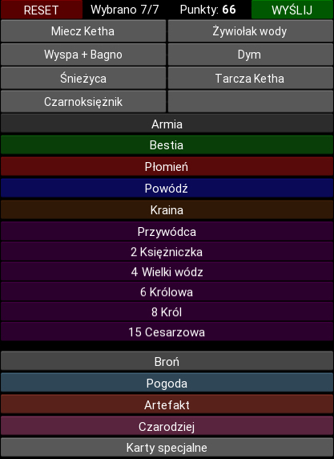
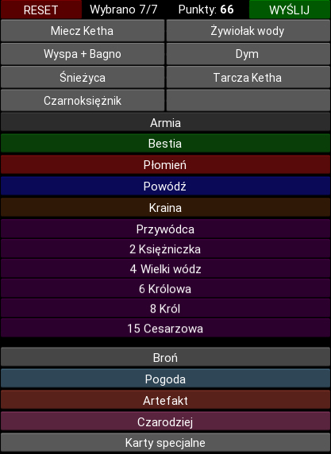

Gra VR tworzona w Unity:
Gra jest tworzona na silniku Unity, przeznaczona na zestaw VR Occulus Quest.
Obecnie w grze zaimplementowane są:
Obecnie w grze zaimplementowane są:
- poruszanie się gracza w trybie ciągłym oraz teleport
- podstawowe interakcje gracza z obiektami
- prosta fizyka
- zasady gry w bilard
Aplikacja Webowa Django REST:
Po kursie Django RESTfull API, napisałem aplikację,
która rozszerza funkcjonalność kalkulatora punktów w grze karcianej Fantastyczne Światy.
Aplikacja ta umożliwia zapisywanie wyników z gry poszczególnych
graczy do bazy danych na serwerze, sumuje punkty z wszystkich rund oraz wyświetla tablicę wyników.
Kalkulator punktów w grze karcianej Fantastyczne Światy:
Bardzo lubię grę karcianą Fantastyczne światy, jednak ogromnym
minusem jest długi czas, potrzebny na zliczanie punktów po każdej rundzie.
Napisałem więc aplikacje na Androida, która w łatwy i szybki sposób
zliczy punkty. Znając podstawy Pythona, zdecydowałem się
na użycie frameworku Kivy.
 
